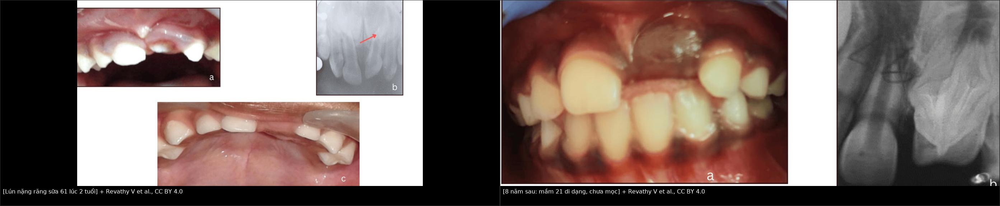
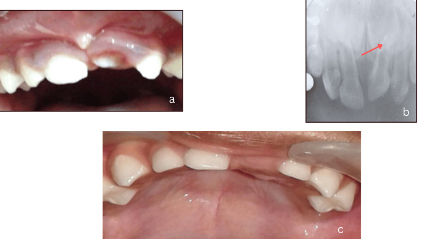
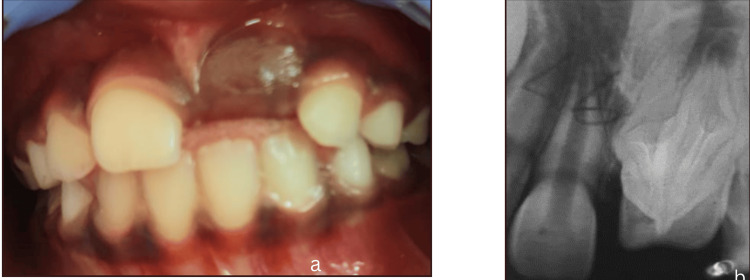
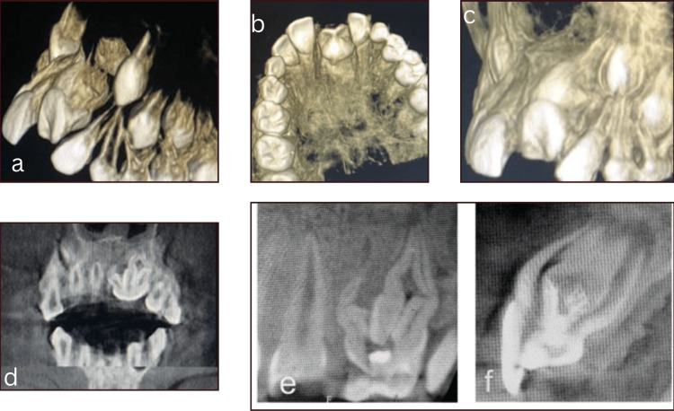

748 — Chấn thương răng SỮA và mầm răng vĩnh viễn: lún – bật – gãy, khi nào nhổ và theo dõi bao lâu / Primary tooth trauma and the permanent successor
Tags: pattern:di-lech-rang pattern:lun-rang pattern:mat-rang-lam-sang pattern:di-dang-mam-rang vung:rang-ham vung:ham-mat vung:so-mat anatomy:rang-ham anatomy:xoang-ham protocol:CBCT protocol:phim-quanh-dinh protocol:toan-hinh score:IADT
Mức chắc chắn (certainty): tổng hợp y văn (literature synthesis) — đoàn hệ 238 răng / 168 trẻ (PMC34165860), đoàn hệ 138 răng / 78 trẻ theo dõi 7 năm (PMID 19820735), 18 nghiên cứu trong tổng quan hệ thống (PMID 25382149), hướng dẫn IADT 2020 cho răng sữa (PMID 32458553) và ca nguyên văn có ảnh theo dõi 8 năm (PMC11214667). Câu nào là suy luận được ghi [suy luận].
Vì sao bài này quan trọng: 747 phủ răng vĩnh viễn; nhưng trẻ dưới 4 tuổi bị chấn thương răng hầu như luôn là răng sữa, và hậu quả không nằm ở chiếc răng sữa — nó rơi vào mầm răng vĩnh viễn chưa mọc. Răng sữa lún (intrusion) tự mọc lại 68–78%, nên phản xạ "nhổ cho nhanh" là sai; nhưng 52,6–54% trường hợp để lại khiếm khuyết mầm răng (men, chân răng, vị trí mọc), chỉ lộ ra nhiều năm sau (PMC34165860, PMID 19820735). Bỏ theo dõi = bỏ mất cửa sổ can thiệp chỉnh hình/endodontic.
1. Tổng quan bệnh học – cơ chế hình ảnh
- Giải phẫu quyết định hậu quả: mầm răng vĩnh viễn nằm phía lưỡi và phía chóp so với răng sữa; chân răng sữa dài hơn so với thân, chóp đóng muộn (2–3 tuổi). Vì vậy lực dọc trục của lún đẩy chân răng sữa thẳng vào mầm răng — khác hẳn lực ngang của luxation. Trẻ < 2–3 tuổi có xương ổ ít canxi hóa, mầm răng đang ở giai đoạn tạo hình sớm → tổn thương nặng hơn (PMC11214667).
- TẠI SAO phim thấy "răng ngắn lại/chìm vào xương": lún là di lệch theo trục dọc vào xương ổ; trên phim quanh đỉnh, thân răng cao độ bất thường, khe dây chằng nha chu (PDL) mất ở vùng chân răng bị dồn ép, và chân răng chồng lên mầm răng vĩnh viễn. Khi lún hoàn toàn, răng không còn thấy trên lâm sàng — dễ bị đọc là avulsion (bật răng).
- TẠI SAO hậu quả xuất hiện MUỘN: mầm răng bị chấn thương ở giai đoạn khoáng hóa → nguyên bào men (ameloblast) chết một phần → thiểu sản men khu trú (Turner tooth); tổn thương vỏ Hertwig → gãy cong chân răng (dilaceration) hoặc nhân đôi chân răng; tổn thương nặng toàn bộ mầm → ngưng phát triển, di dạng kiểu odontoma, hoặc cầm tù mầm răng. Các bất thường này chỉ thấy khi răng vĩnh viễn mọc hoặc trên CBCT.
- Vì sao nhiễm trùng răng sữa làm nặng thêm: răng sữa hoại tử → viêm quanh chóp → viêm lan vào mầm răng, gây ngưng tạo men/ngà và tiêu mầm. Vì thế kiểm soát nhiễm trùng răng sữa song song với theo dõi mầm răng.
- Số liệu định lượng cốt lõi:
- Dịch tễ: chấn thương răng sữa gặp 22,7% trẻ (gộp toàn cầu) và 24,2% trong một tổng quan 24 nghiên cứu; luxation là thể thường gặp nhất (PMC11791467). Lún chiếm 8–22% các ca luxation răng sữa (có báo cáo tới 54%) (PMC11214667).
- Đoàn hệ 238 răng / 168 trẻ (PMC34165860): 87,8% là răng cửa giữa hàm trên; Grade I 32,8%; mọc lại 13,1% trong 30 ngày, 58,7% sau 3–6 tháng, 68% sau ≥ 6 tháng; Grade III (lún hoàn toàn) liên quan hoại tử tủy/nhiễm trùng (p = 0,002); trong 78 răng vĩnh viễn được đánh giá, 52,6% có bất thường phát triển.
- Đoàn hệ 138 răng / 78 trẻ 12–48 tháng, theo dõi 7 năm (PMID 19820735): 36 răng (23 trẻ) phải nhổ ngay vì luxation ngang rộng + lún; 102 răng còn lại: 78% mọc lại hoàn toàn, 15% mọc một phần, 7% cầm tù; 54% răng có hậu quả sau chấn thương; 74/138 mầm răng vĩnh viễn có ≥ 1 bất thường — thiểu sản men 28,3%, gãy cong chân răng 16,7%, mọc lệch chỗ 16,7%. Không tìm thấy liên quan với tuổi lúc chấn thương.
- Tổng quan 18 nghiên cứu (PMID 25382149): trẻ càng nhỏ và chấn thương càng nặng (lún/bật) → hậu quả mầm răng càng nhiều và càng nặng.
- Ca nguyên văn (PMC11214667): bé gái 2 tuổi, răng 61 lún 7 mm, chỉ thấy 1/3 cạnh cắn; phim cho thấy chân răng chạm mầm 21 đang tạo hình → nhổ 61; 8 năm sau răng 21 chưa mọc, CBCT: dị dạng thân răng, mấu răng kiểu talon, gãy cong chân, nhân đôi chân răng; chờ 6 tháng răng tự mọc; sau đó áp-xe quanh chóp → nội nha nhiều ống tủy + phục hồi composite.
2. Mẫu hình + chẩn đoán phân biệt theo vị trí (gamut)
Mẫu hình chốt: trẻ < 4 tuổi, ngã đập mặt, răng cửa giữa hàm trên; răng ngắn lại, chìm vào xương ổ, lung lay hoặc mất hẳn trên lâm sàng; phim cho thấy chân răng sữa chồng lên mầm răng vĩnh viễn.
- Theo kiểu di lệch:
- Lún (intrusion): nặng nhất cho mầm răng; chia Grade I–III theo độ sâu (Grade III = lún hoàn toàn, không thấy thân răng). Hướng chân răng ra trước (labial) hay vào trong (palatal) quyết định nguy cơ chạm mầm răng.
- Bật (avulsion): răng rời ổ — không cấy lại răng sữa (nguy cơ làm tổn thương mầm răng và nhiễm trùng).
- Luxation ngang (lateral luxation): răng di lệch sang bên, thường tự nắn 95%; 24,2% hoại tử tủy trong 3 năm (PMC11791467).
- Trồi (extrusion): răng dài ra, cản trở khớp cắn; nhiều ca phải nhổ ngay; 15,6% răng còn lại hoại tử trong 3 năm.
- Dập/subluxation: nguy cơ hoại tử thấp.
- Gãy thân/chân răng: lấy mảnh lung lay để tránh hít sặc; không cố lấy mảnh chân nhỏ sát mầm răng.
- Gamut "răng sữa không thấy trên lâm sàng": lún hoàn toàn (phải tìm trên phim) – avulsion – răng mọc lệch vào mô mềm/mũi – răng chưa mọc – nhổ/rụng trước đó. Bắt buộc phim trước khi kết luận "mất răng".
- Gamut "răng vĩnh viễn chưa mọc sau chấn thương răng sữa": cầm tù do sẹo/xương – gãy cong chân – di dạng kiểu odontoma – nhân đôi chân – mọc lệch chỗ – chậm mọc sinh lý.
3. Bảng so sánh phân biệt (ma trận đối chiếu)
| Thực thể (entity) | Hình ảnh điển hình | Chốt vào (rule-in) | Chốt loại (rule-out) | Gợi ý xác nhận |
|---|---|---|---|---|
| Lún răng sữa (intrusion) | Thân răng cao độ bất thường, chìm vào xương; mất khe PDL; chân chồng mầm răng | Răng ngắn/chìm + tiền sử chấn thương dọc trục | Răng bật khỏi ổ (không thấy cả chân) | Phim quanh đỉnh; CBCT khi nghi chạm mầm/gãy chân |
| Bật răng sữa (avulsion) | Ổ răng trống, không có chân răng trong xương; mô mềm rách | Không thấy răng cả trên phim | Lún hoàn toàn (còn chân trong xương) | Phim quanh đỉnh ± CBCT |
| Luxation ngang | Răng di lệch sang bên, khe PDL rộng một bên | Di lệch ngang + lung lay | Lún (di lệch dọc) | Phim 2 bình diện; đo độ di lệch |
| Trồi răng (extrusion) | Răng dài ra, chân di chuyển ra khỏi ổ | Răng dài + cản khớp cắn | Lún (răng ngắn) | Phim quanh đỉnh |
| Gãy chân răng sữa | Đường sáng ngang chân răng, mảnh chân di lệch | Đường gãy rõ + mảnh lung lay | Lún (không có đường gãy) | CBCT khi phim 2D không rõ |
| Mầm răng vĩnh viễn bình thường | Nang răng bao quanh mầm, khoảng cách đều, không di lệch | Nang răng liên tục, mầm đúng vị trí | Mầm di lệch/ngưng phát triển | So phim cũ; CBCT nếu nghi |
| Di chứng mầm răng (Turner/dilaceration) | Thiểu sản men khu trú, gãy cong chân, nhân đôi chân, mọc lệch | Bất thường hình thể trên CBCT/panoramic | Mầm bình thường, chỉ chậm mọc | CBCT + theo dõi đến khi mọc |

Trái: 61 lún 7 mm ở trẻ 2 tuổi — chỉ còn 1/3 cạnh cắn, phim cho thấy chân răng chạm mầm 21 (a, b); sau nhổ, niêm mạc lành (c). Phải: 8 năm sau — 21 chưa mọc, phim cho thấy dị dạng thân và chân răng. Nguồn: Revathy V et al., Cureus 2024 (PMC11214667), CC BY 4.0; ảnh ghép letterbox.4. Protocol chụp + hệ phân độ/điểm chuẩn hóa
- Trước chụp — khám lâm sàng có cấu trúc:
- Tuổi, cơ chế, thời điểm, tiêm phòng uốn ván, bệnh nền; tầm soát chấn thương do ngược đãi (NAI) ở trẻ nhỏ vì đây là nhóm nguy cơ (PMC11791467).
- Đếm răng, mức lún (mm), hướng lún, lung lay, cản khớp cắn, màu răng, lỗ rò/sưng, vết thương mô mềm; khám mũi/môi (răng có thể bị đẩy vào mô mềm).
- Chụp — chọn đúng, ít tia (ALARA):
- Phim quanh đỉnh (periapical) + phim cắn (occlusal) là bước đầu; phim toàn cảnh (panoramic) khi cần nhìn mầm răng hai hàm.
- CBCT khi: nghi gãy chân răng, lún sâu sát mầm, mầm răng di lệch/bất thường, hoặc trước nội nha/chỉnh hình. Dùng trường chiếu nhỏ (FOV) + low-dose; bài 9421 phủ liều CBCT nha khoa — không lặp.
- Không chụp lại thường quy nếu không thay đổi xử trí; chụp khi có triệu chứng mới hoặc mốc theo dõi.
- Xử trí theo IADT 2020 (răng sữa):
- Lún: theo dõi mọi mức lún, kể cả lún hoàn toàn — đa số tự mọc lại; không nắn bằng lực, không nội nha dự phòng (PMC11791467).
- Nhổ khi: răng lún sâu, chân răng chạm/di lệch mầm răng vĩnh viễn, nhiễm trùng/hoại tử không kiểm soát được, cản khớp cắn, hoặc không thể theo dõi [suy luận từ tiêu chí thực hành + ca PMC11214667].
- Bật răng sữa: không cấy lại trong mọi trường hợp (nguy cơ tổn thương mầm răng và nhiễm trùng) (PMC11791467).
- Kháng sinh toàn thân: không có bằng chứng cho luxation răng sữa; chỉ dùng theo đánh giá nguy cơ từng ca.
- Mảnh chân răng nhỏ: thường để lại, tránh làm tổn thương mầm răng.
- Theo dõi (lịch thực hành — [suy luận] từ khuyến cáo IADT): 1 tuần – 1 tháng – 3 tháng – 6 tháng – 12 tháng, sau đó hằng năm đến khi răng vĩnh viễn mọc; khám màu răng, lỗ rò, lung lay, vị trí mọc; chụp lại khi có bất thường. Ghi bàn giao khi gia đình chuyển nơi ở — đây là lý do hay mất theo dõi nhất (ca PMC11214667 mất liên lạc 8 năm).
- Không có hệ phân độ riêng cho mầm răng. Dùng phân độ lún I–III cho răng sữa + mô tả 5 kiểu di chứng (men, thân, chân, vị trí, cầm tù).
flowchart TD
A[Trẻ ngã, răng cửa sữa ngắn/chìm] --> B{Thấy răng trên lâm sàng?}
B -->|Không| C[Phim: lún hoàn toàn hay bật răng?]
C -->|Chân còn trong xương| D[Lún hoàn toàn - theo dõi]
C -->|Ổ răng trống| E[Bật răng - không cấy lại]
B -->|Có, ngắn lại| F{Chân răng chạm/di lệch mầm?}
F -->|Có| G[Nhổ + theo dõi mầm răng]
F -->|Không| H[Theo dõi tự mọc lại]
D --> I[1 tuần - 1 tháng - 3 tháng - 6 tháng - 12 tháng]
H --> I
G --> I
E --> I
I --> J{Mầm răng bất thường?}
J -->|Có| K[CBCT + chỉnh hình/nội nha khi mọc]
J -->|Không| L[Tiếp tục hằng năm đến khi mọc]
5. Biến thể bình thường và cạm bẫy
- Biến thể: mầm răng vĩnh viễn nằm sát chân răng sữa là bình thường; khe PDL rộng nhẹ ở răng sữa đang tiêu chân răng sinh lý không phải chấn thương. Luôn so phim cũ và đối chiếu hai bên.
- Cạm bẫy 1 — lún hoàn toàn bị đọc là bật răng: răng "mất" trên lâm sàng nhưng chân vẫn trong xương; nếu kết luận bật răng sẽ bỏ qua theo dõi mầm và không phát hiện di chứng. Ca lún độ 3 từng bị chẩn đoán nhầm là avulsion, dẫn tới dính răng sữa–răng vĩnh viễn và phải nhổ cả hai (PMC38853604).
- Cạm bẫy 2 — "răng sữa rồi sẽ rụng": đúng về số phận chiếc răng, sai về mầm răng; 52,6–54% để lại di chứng. Không theo dõi = bỏ thiểu sản men/gãy cong chân.
- Cạm bẫy 3 — cấy lại răng sữa: chống chỉ định tuyệt đối; nguy cơ nhiễm trùng và tổn thương mầm răng.
- Cạm bẫy 4 — kháng sinh "cho chắc": không có bằng chứng cho luxation răng sữa; dùng tràn lan gây loạn khuẩn/kháng thuốc.
- Cạm bẫy 5 — nhổ mảnh chân nhỏ: có thể làm tổn thương mầm răng; chỉ lấy mảnh lung lay, dễ hít sặc, còn mảnh sát mầm thường để lại.
- Cạm bẫy 6 — CBCT quá tay: trẻ nhỏ nhạy cảm bức xạ; chỉ chụp khi thay đổi xử trí (FOV nhỏ, low-dose).
- Cạm bẫy 7 — bỏ theo dõi vì "răng đã mọc lại": răng sữa mọc lại không loại trừ tổn thương mầm đang tiến triển; mốc 6–12 tháng và hằng năm mới bắt được gãy cong chân/mọc lệch.
6. Tự lượng giá — Blind Quiz
Ca 1 — Bé gái 2 tuổi, ngã từ xe tập đi, răng cửa giữa hàm trên bên phải ngắn lại, chỉ còn 1/3 cạnh cắn.

- Gợi ý: không có tiền sử chấn thương trước đó; răng bên cạnh bình thường; phim quanh đỉnh thấy chân răng sữa chồng lên mầm răng vĩnh viễn.
- Hỏi: (1) Chẩn đoán và mức lún? (2) Vì sao phải nhổ trong ca này? (3) Hậu quả lâu dài có thể gặp ở răng vĩnh viễn?
Bấm để hiện đáp án
- Dấu hiệu: (a) 61 lún, chỉ thấy 1/3 cạnh cắn; (b) phim quanh đỉnh: chân 61 chồng lên mầm 21, mầm đã tạo 1/3 thân răng; (c) sau nhổ, niêm mạc lành.
- Mức lún: 7 mm so với răng bên — lún nặng, chân răng đe dọa mầm 21.
- Vì sao nhổ: chân răng chạm/di lệch mầm răng vĩnh viễn đang tạo hình — để lại sẽ tăng nguy cơ di dạng mầm và nhiễm trùng.
- Hậu quả lâu dài: thiểu sản men (Turner), dị dạng thân răng, gãy cong chân, nhân đôi chân, mọc lệch/cầm tù.
- Nguồn: Revathy V et al., Cureus 2024 (PMC11214667), CC BY 4.0 (Fig. 1).
Ca 2 — Cùng bệnh nhi, 8 năm sau: răng cửa giữa hàm trên bên trái chưa mọc.

- Gợi ý: các răng 11, 12, 22 đã mọc đúng vị trí; không sưng đau lúc khám.
- Hỏi: (1) Chẩn đoán phân biệt của một răng cửa vĩnh viễn chưa mọc sau chấn thương răng sữa? (2) Phim cho thấy gì? (3) Bước tiếp theo?
Bấm để hiện đáp án
- Dấu hiệu: (a) 21 chưa mọc, niêm mạc phồng nhẹ; (b) phim: mầm 21 dị dạng thân và chân răng, không giống răng bên.
- Chẩn đoán phân biệt: cầm tù do sẹo/xương, gãy cong chân, di dạng kiểu odontoma, nhân đôi chân, mọc lệch chỗ, chậm mọc sinh lý.
- Bước tiếp theo: CBCT đánh giá hình thể/đường mọc; nếu không cản trở và còn khả năng mọc → theo dõi; nếu cầm tù/di dạng nặng → phẫu thuật hỗ trợ mọc hoặc nhổ + phục hình khi đủ tuổi.
- Nguồn: Revathy V et al., Cureus 2024 (PMC11214667), CC BY 4.0 (Fig. 2).
Ca 3 — CBCT của cùng răng 21 sau 8 năm.

- Gợi ý: răng 21 chưa mọc, hình thể lâm sàng bất thường; CBCT được chụp trước khi quyết định can thiệp.
- Hỏi: (1) CBCT thêm được thông tin gì so với phim quanh đỉnh? (2) Mô tả 3 bất thường? (3) Vì sao chọn theo dõi thay vì mổ ngay?
Bấm để hiện đáp án
- Giá trị CBCT: thấy hình thể 3D của thân/chân, mấu răng phía lưỡi, gãy cong chân, số chân/ống tủy, và tương quan với xương ổ — phim 2D chỉ thấy một mặt phẳng.
- Ba bất thường: dị dạng thân răng + mấu kiểu talon, gãy cong chân răng (dilaceration), nhân đôi chân răng.
- Vì sao theo dõi: mầm còn khả năng mọc tự phát; mổ sớm có thể làm tổn thương thêm mầm — ca này răng tự mọc sau 6 tháng, sau đó mới xử trí áp-xe/nội nha.
- Nguồn: Revathy V et al., Cureus 2024 (PMC11214667), CC BY 4.0 (Fig. 3).
Bài liên quan chéo
- 747 – Chấn thương răng và ổ răng ở trẻ: luxation – intrusion – avulsion, CBCT và ngưỡng nẹp
- 752 – Thiểu sản men Turner ở răng vĩnh viễn: di chứng men khu trú, phân biệt MIH/fluor và tiêu chân răng
- 1708 – Gãy lồi cầu xương hàm dưới ở trẻ
- 9421 – CBCT nón trong nha khoa & chỉnh nha ở trẻ: FOV, DRL và khi nào dùng phim 2D
- 600 – Tổng quan Nhi khoa
Không dùng để chẩn đoán độc lập khi chưa có người hướng dẫn.